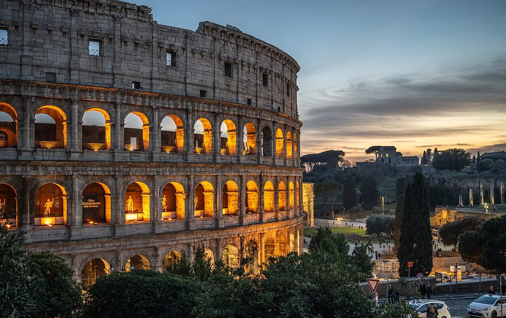

Europe
France
Art-filled cities, Alpine slopes and a taste of regional France
5 attractions
5 countries to discover
Find a place that speaks to your curiosity. Explore its landmarks, local food, traditions and everyday adventures.
Europe
Art-filled cities, Alpine slopes and a taste of regional France

Europe
Ancient streets, Renaissance art and regional flavors

Europe
Gaudí's curves, Andalusian courtyards and lively local tables

Europe
Atlantic light, tiled streets and a soundtrack of fado

Europe
Ancient stones, island coves and tables made for sharing